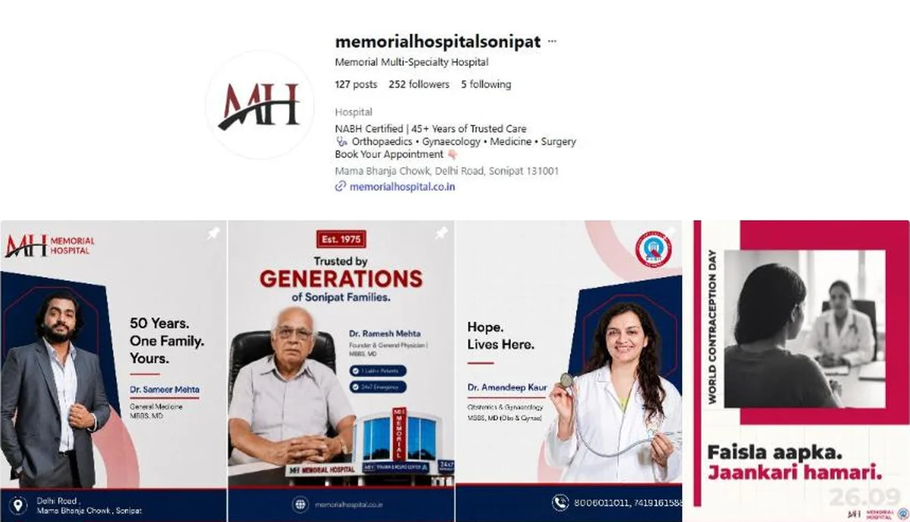

Instagram · Hospital · 2026
Memorial Hospital, Sonipat
Turning a 50-year local reputation into an Instagram presence people can navigate, department by department.

The brief
Memorial Hospital has served Sonipat families since 1975. Offline, that reputation is everything. Online, it was barely visible. The job was to carry that trust onto Instagram and make it easy for someone to find the right department and doctor in a few taps.
My approach
We led with legacy and people, not buildings. A "50 Years. One Family. Yours." campaign introduced the founder and the doctors by name. Everyday captions were written in Hinglish from the family's point of view, like "Papa ab seedhiyaan chadhte hue beech mein ek baar rukte hain", so a heart-health post reads like something that's happening in your own home.
What I did
- Shaped the 50-year legacy campaign and doctor introduction posts.
- Wrote captions and reel scripts for orthopaedics, gynaecology, cardiology, emergency care and more.
- Planned patient stories and health-day content such as World Lung Day and World Contraception Day.
- Set up the profile and 11 department highlights so every specialty is one tap away.
A hospital doesn't need to sound like a hospital. It needs to sound like the families who trust it.